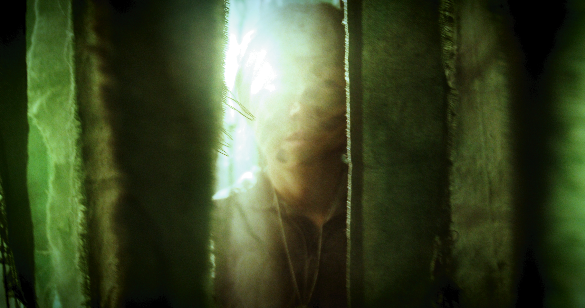
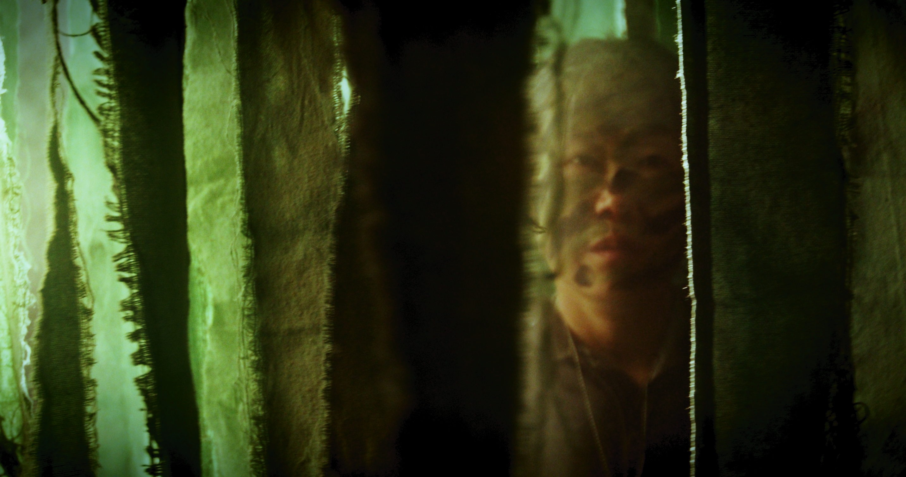
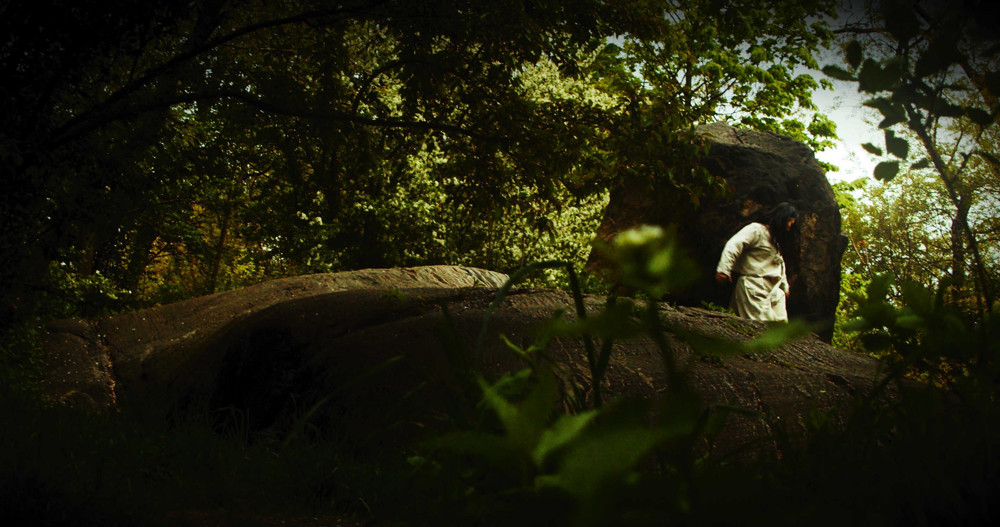
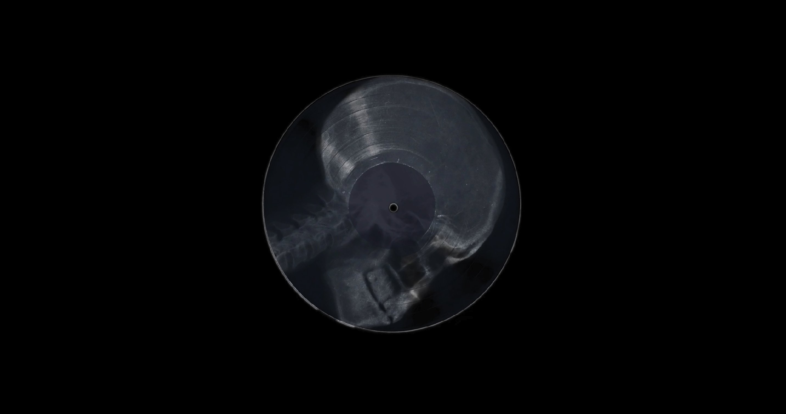

A single-channel digital short video reexamining Korean history from the perspective of Korean women, uncovering the hidden truths, aspirations, and untold stories that have been overshadowed, erased, or lost between the lines of texts, images, and historical records.
After a long hunt, a Joseon woman faces persecution; her nose is severed as punishment for alleged infidelity. As she takes her final breaths, her fleeting death wish transcends through the history of Korean women from Joseon to the Korean War.
Writer, Director, DoP, Editor. Esther Yun Kong
1st AC. Becca Anton
2nd AC. Eileen Chang
Gaffer. Vivian Xiao
Grip. Kemi Alade
Actor. Hyeyoung Yun @hyeyoungyun_fineart
• 2025 Chicago International Film Festival
• 2025 CineYouth Festival by ACADEMY AWARD®-QUALIFYING Chicago International Film Festival Best Experimental Award
• 2025 NFFTY (National Film Festival for Talented Youth) Best Experimental Jury Award
• 2024 Hudson Valley Film Fest Rising Student Award